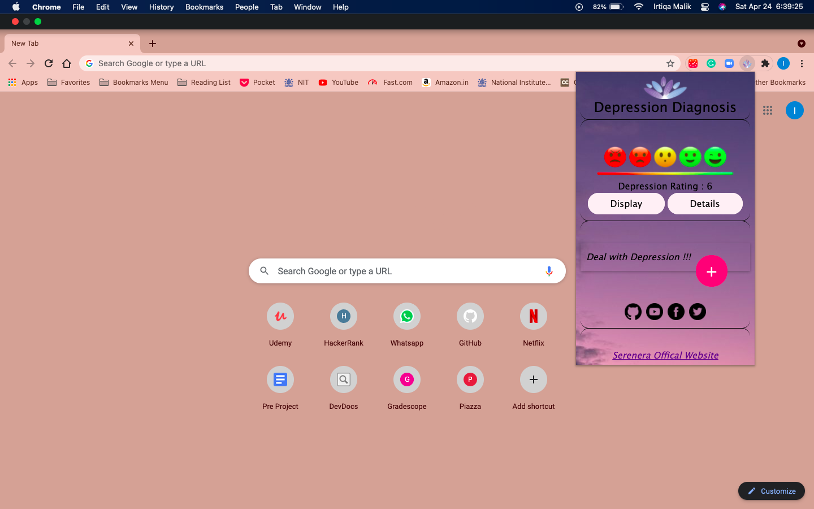

Depression Diagnosis
Fight Depression !
Monitor chrome browsing for diagnosis of depression in early stages
Features
Chrome Extension

- Monitor your Depression Levels
- Awesome features to relieve depression
- Listen to soothing music!
- Therapy ChatBots
- Contact your nearest Psychiatrist
Why Depression Diagnosis is Important?
- Depression is ranked as the largest contributor to global disability and is also a major reason for suicide. Still, many individuals suffering from forms of depression are not treated for various reasons.
- Depressed people behave different from normal people which can be detected in audio and visual recordings of the patient. To be diagnosed with depression, the symptoms must be present for at least two weeks. Hence detection of depression is a major issue.
- Detecting depression earlier can be a huge step to address this problem and offer support to the people suffering from this terrible mental illness.
- The aim of our project is to provide users with a convenient, affordable, and confidential way to deal with anxiety, depression and enable an improved response to stress.
Future Prospects
- We also plan to further extend this idea to various other browsers and platforms.
- Recognizing depression from searched images.
- Recognizing depression in live video.
- Detection of depression from acoustic features in speech.
- Providing a one on one session with a certified psychologist.

Contact
Contact us about any queries!
Contact
Contact Developers
- Irtiqa Malik
Contact Me